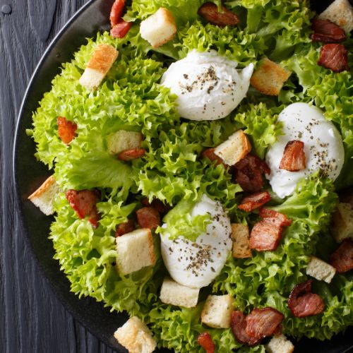
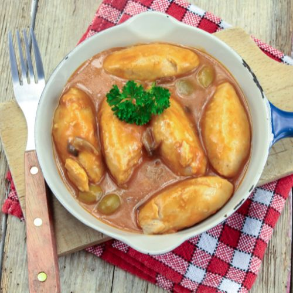

La gastronomie à Lyon
Lyon est souvent considérée comme la capitale gastronomique de la France, et il est facile de comprendre pourquoi en se promenant dans ses rues. La ville est un véritable festin pour les sens, où la tradition culinaire se mêle à l'innovation avec une aisance remarquable. Les bouchons lyonnais, ces petits restaurants typiques, offrent un voyage gustatif à travers des plats emblématiques comme la quenelle, le saucisson brioché ou encore les grattons. La diversité des produits frais, du fromage au vin, en passant par les produits du terroir, est une véritable célébration de la richesse régionale. Les marchés de Lyon, tels que celui des Halles Paul Bocuse, sont un lieu de pèlerinage pour les amateurs de bonne cuisine, proposant des délices allant des charcuteries artisanales aux pâtisseries raffinées. La ville est également le berceau de nombreux chefs étoilés qui perpétuent la tradition tout en apportant leur touche personnelle. Ainsi, chaque repas à Lyon est une expérience en soi, mêlant histoire, culture et plaisir gustatif dans une harmonie parfaite.
cuisine lyonnaise
La cuisine lyonnaise est réputée pour ses spécialités robustes et savoureuses, souvent élaborées à partir de produits locaux et traditionnels. Parmi les incontournables, on trouve la quenelle, un mélange de poisson ou de viande avec de la farine, du beurre et des œufs, souvent servi avec une sauce crémeuse. Le saucisson brioché, une saucisse enveloppée dans une pâte à brioche, est également un classique, souvent dégusté lors des repas de fête. Les grattons, morceaux de viande de porc frits, sont une autre spécialité populaire, souvent consommés en tant qu'apéritif ou en accompagnement.
Les lyonnais apprécient également les pieds de porc, souvent préparés en daube ou en sauce, ainsi que les cervelle de canut, une sorte de fromage blanc assaisonné d'herbes et d'échalotes, servi généralement avec du pain. Les tripes à la lyonnaise, cuites longuement dans un mélange de vin blanc et d'épices, sont un autre plat traditionnel, apprécié pour leur richesse en saveurs. Ces spécialités, typiques de la cuisine régionale, incarnent l'amour des Lyonnais pour les plats savoureux et généreux.

